Manhattan: The Diplomatic Center
Text, Maps and Photos by Shotaro Miyasaka | Aug 5, 2023 | Data Sources are Available in Github | Back to Homepage
New York City is one of the most cosmopolitan cities in the world, attracting residents from all over the world. It is also home to the headquarters of the United Nations.
Photo by Shotaro Miyasaka
A Cosmopolitan City Where Nations Meets
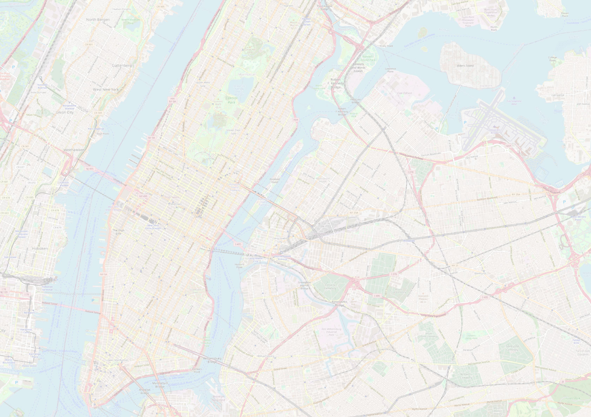
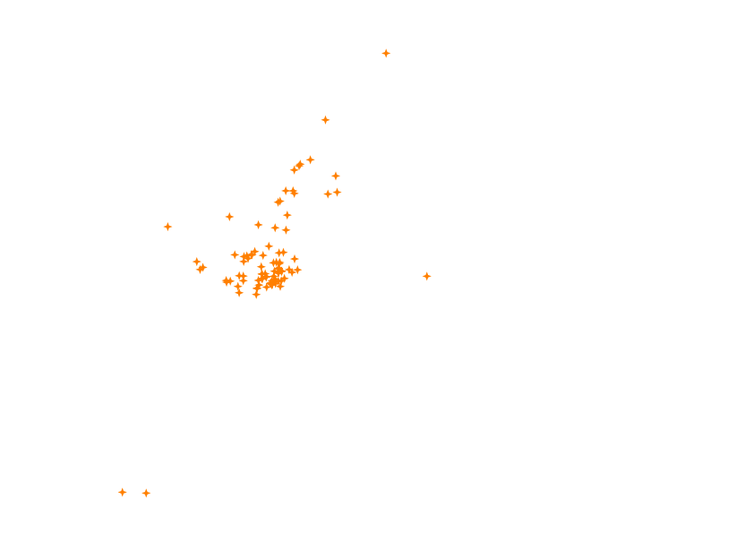
 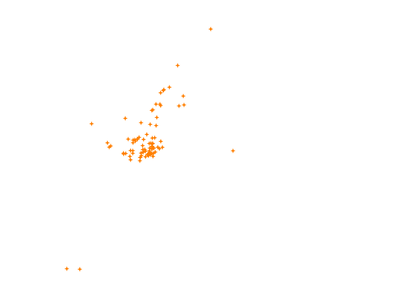
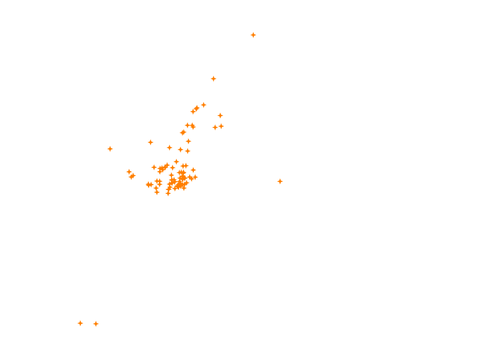
Zoom in on Manhattan
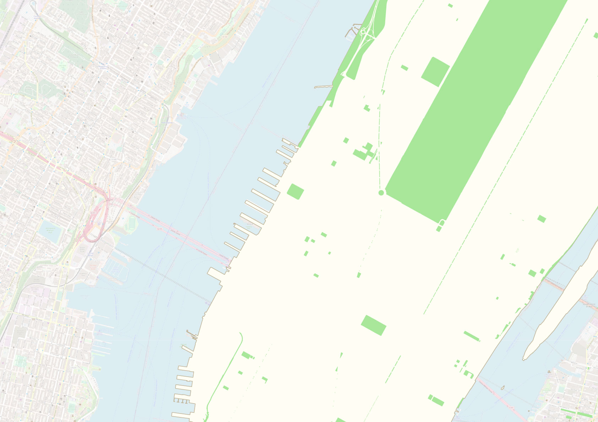

 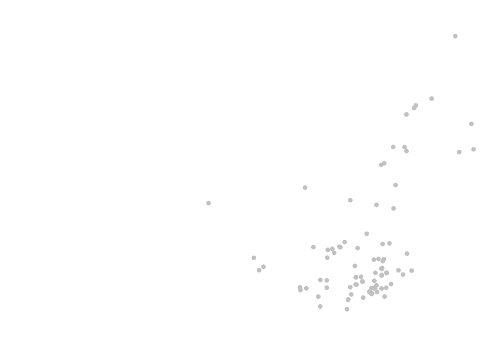
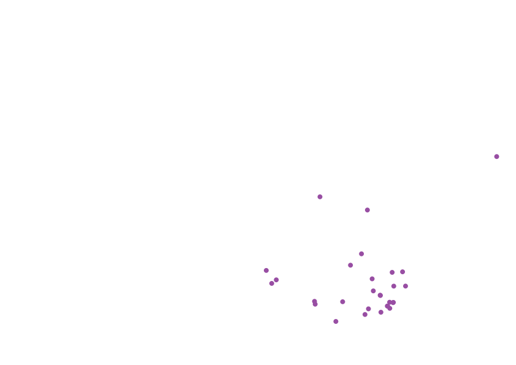
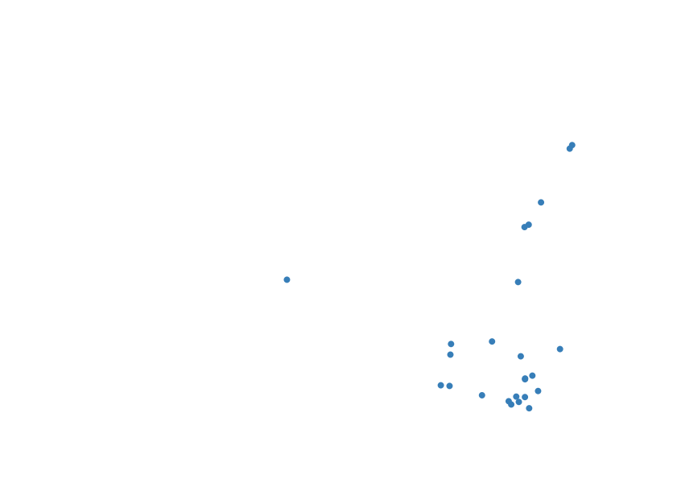
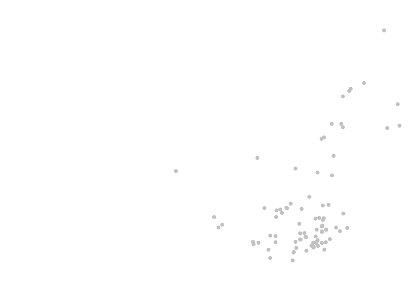
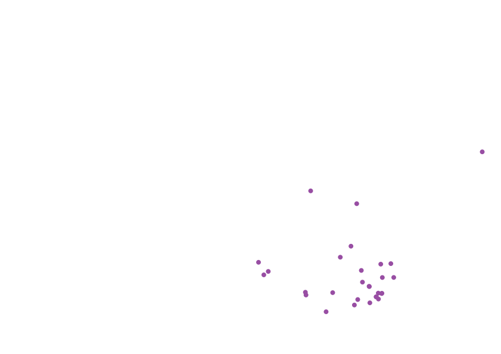
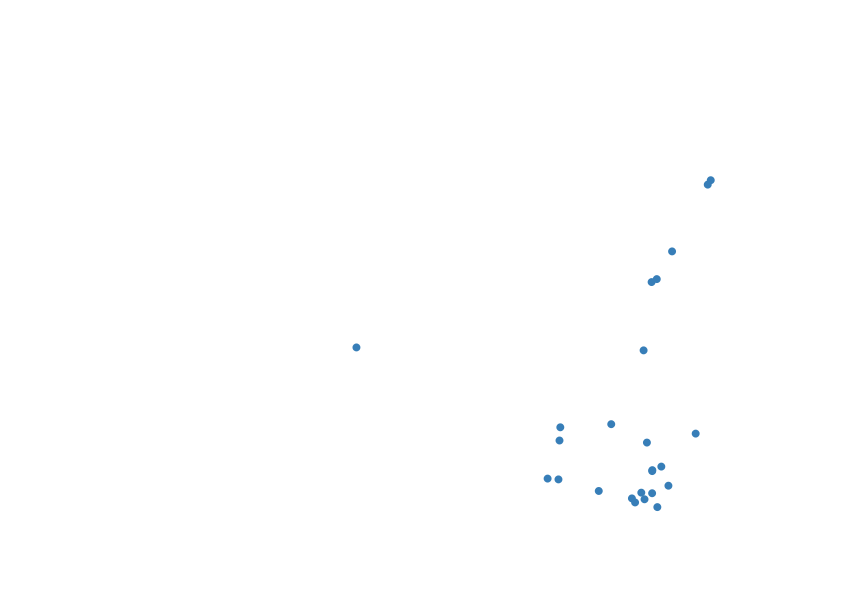
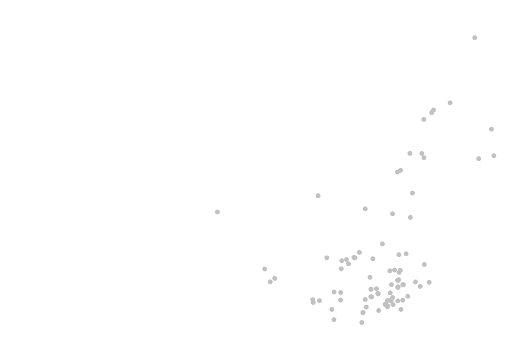
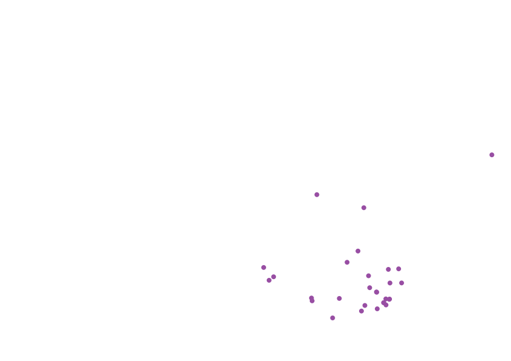
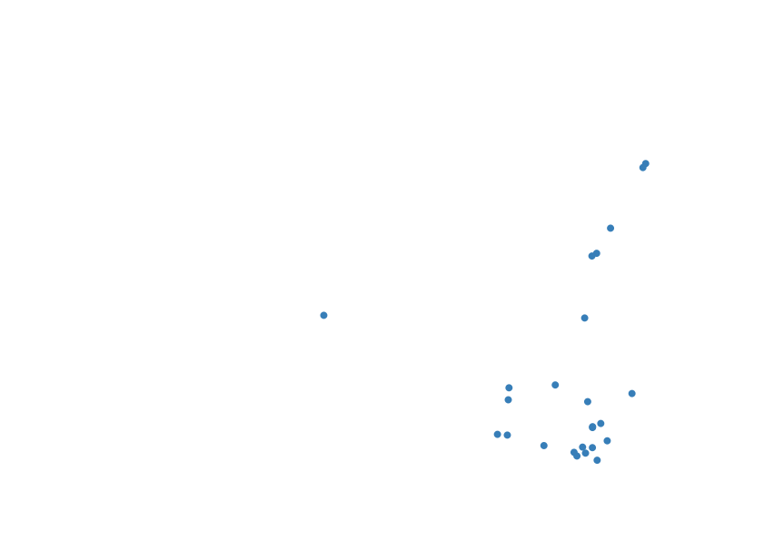
Russia
Russia
Russia
France
France
Indonesia
Indonesia
Italy
Italy
2km
India
India
Argentina
South Korea
China
China
1km
South Africa
Japan
Germany
Canada
UK
Saudi Arabia
Turkey
Australia
Mexico
United Nations
Headquarters
Brazil
New York City is one of the most cosmopolitan cities in the world, attracting residents from all over the world. It is also home to the headquarters of the United Nations.